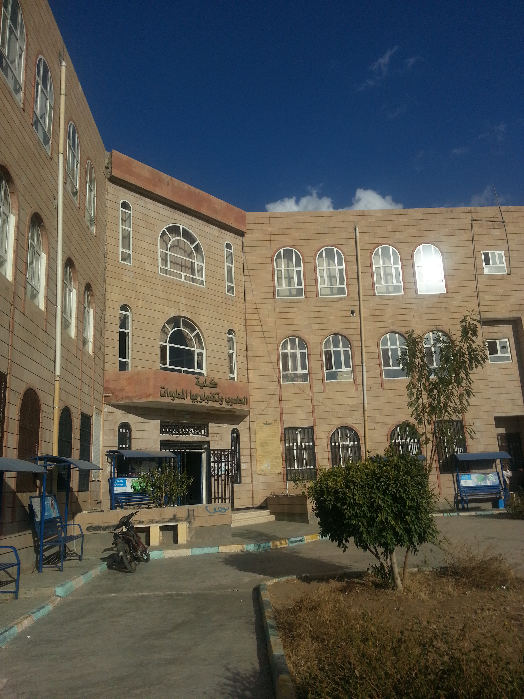

نشأة الكلية وتطورها

 |
|||||
| التسجيل الذاتي | التعلم الاكتروني | مجلات الكلية المتاحة | المجلة الاخبارية | المكتبة | الرسائل والاطروحات الجامعية |
أقسام الكلية
قسم علوم الحاسوب
قسم نظم المعلومات
قسم تكنولوجيا المعلومات
رؤية الكلية
أن تكون الكلية متميزة محليا واقليميا في مجال الحاسوب وتكنولوجيا المعلوماترسالة الكلية
تقديم تعليم أكاديمي متميز من خلال برامج أكاديمية وفقا للمعاير العالمية وتشجيع البحث العلمي بما يخدم المجتمع ويلبي متطلبات سوق العملكلمة عميد الكلية
أبنائي الطلاب وبناتي الطالبات بكلية الحاسوب وتكنولوجيا المعلومات نبارك لكم قبولكم وانضمامكم للكلية. فنحن على ثقة بأنكم ستضيفون لوناً جميلاً لكليتنا الموقره بتعاملكم الراقي ومثابرتكم وجديتكم بالتحصيل العلمي والتزامكم بلوائح وأنظمة الكلية والجامعة فهذا الدليل يحتوي على اللوائح والأنظمة التي تتعلق بالطالب والنافذة بالكلية وبين سير عمليات التنسيق والقبول والتسجيل ونظام الدراسة كما يحتوي على الأقسام والبرامج العلمية بخططها الأكاديمية المتوفره بالكلية. نتمنى لكم مسيره حافلة بالانجازات العلمية في حياتكم بكليتنا.كلمة نائب عميد الكلية لشؤون الطلاب
مرحبا بك في كلية الحاسوب وتكنولوجيا المعلومات إحدى كليات جامعة صنعاء، وتحدونا آمال كبيرة بأن تكون الكلية رافداً ثرياً للعلم والمعرفة، وسنداً قوياً لبناء الشخصية المبدعة في علمها، الوفية لوطنها، الناجحة في أدائها كون الكلية تنطلق في رؤيتها ورسالتها إلى تحقيق الريادة على المستوى المحلي والإقليمي في إعداد كفاءات متميزة بالعطاء والإبداع في مجالات الحاسوب وتكنولوجيا المعلومات تسهم في خدمة المجتمع. ونختم بقول الشاعر:لا يرتقي شعب الى أوج العٌلا مالم يكن بانوه من أبنائه